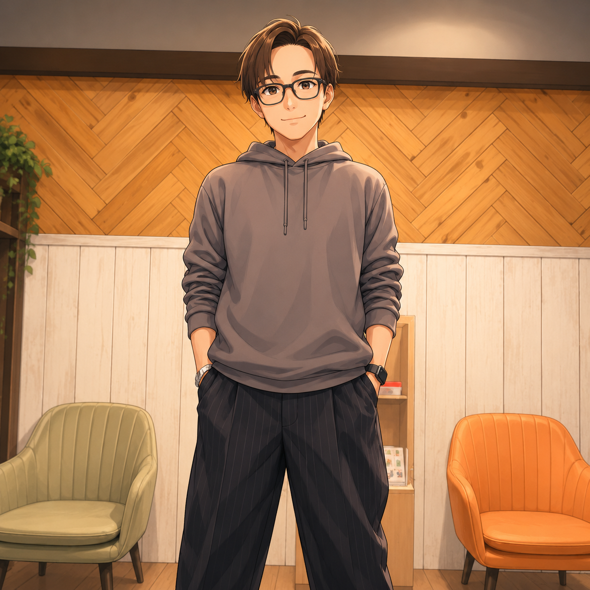

テクノロジーとクリエイティビティが交差する場所。 最新の技術トレンドから実践的な開発テクニックまで、 あなたの成長を加速させる情報をお届けします。
メルマガ登録
AI・テクノロジー・投資の最新情報をお届け！

まだ記事がありません
AI、語学、業務効率化をメインに発信しています。
社会不適合者が実践する生産性ハック
人生のどん底を味わった人間が提案する、これからの人間社会を生き抜くためのノウハウを無料で公開しています。